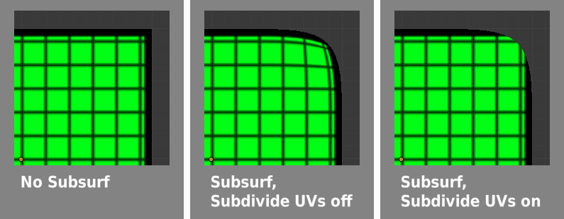
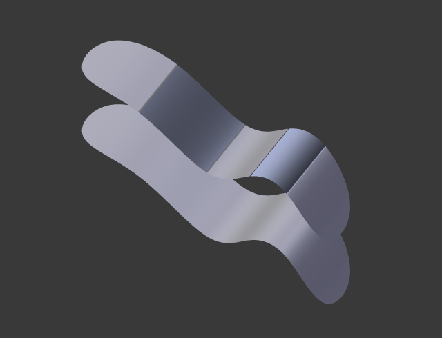
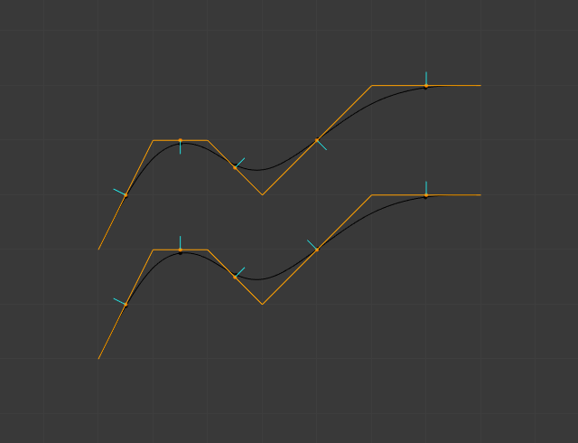

细分表面修改器–knight翻译¶
Subdivision Surface modifier is used to subdivide the faces of a mesh to give a smooth appearance, to enable modeling of complex smooth surfaces with simple, low-vertex meshes. This allows high resolution mesh modeling without the need to save and maintain huge amounts of data and gives a smooth organic look to the object.
该过程创建虚拟几何体，它具有非破坏性，不会修改原始网面，但是你可以用 应用 按钮转换到真实的几何体去编辑。
Also, like the rest of the Modifiers, order of execution has an important bearing on the results. For this, see the documentation on the Modifier Stack.
Keep in mind that this is a different operation than its companion, Smooth Shading. You can see the difference between the two in the grid image below.

Subdivisions levels 0 to 3, without and with Smooth Shading.
小技巧
The Subdivision Surface modifier does not allow you to edit the new subdivided geometry without applying it, but the Multires modifier does (in sculpt mode).
Options¶
Modifier’s Panel.
- 类型
该开关按钮让你选择使用的细分算法：
- Catmull-Clark
- The default option, subdivides and smooths the surfaces. According to its Wikipedia page, the “arbitrary-looking formula was chosen by Catmull and Clark based on the aesthetic appearance of the resulting surfaces rather than on a mathematical derivation.”
- 简单
- Only subdivides the surfaces, without any smoothing
(the same as
W, in Edit Mode). Can be used, for example, to increase base mesh resolution when using displacement maps.
- 细分
Recursively adds more geometry. For details on polygon counts, see the 性能考虑 section.
- 视图
在3D视图里显示的细分级别数。
- 渲染
渲染里显示的细分级别数。
在3D视图里交互使用时，正确的组合这些设置会允许你保持一个快速、轻量级的近似你的模型，但在渲染时使用高质量版本。
警告
小心不要设置 视图 细分值高于 渲染 细分值，这样做的意思是在3D视图里的质量高于渲染的质量。
- Options
- 细分UV
- When enabled, the UV maps will also be subdivided (i.e. Blender will add “virtual” coordinates for all sub-faces created by this modifier).
Subdivide UVs on and off.
- 最佳显示
- When drawing the wireframe of this object, the wires of the new subdivided edges will be skipped (only draws the edges of the original geometry)
- Opensubdiv
- See the OpenSubdiv section.
OpenSubdiv¶
When OpenSubdiv is enabled, the modifier evaluation will happen on a compute device. To enable OpenSubdiv you must first choose the fastest compute device in the User Preferences. Most of the time the best performance will be achieved when using GLSL. As a result performance of the modifier will be much higher which is great for animations.
参见
To find more on OpenSubdiv read the Release Notes.
Improving Performance¶
In order to utilize maximum performance form OpenSubdiv the following things are required:
- The modifier must be last in the Modifier Stack.
- There should be no modifiers prior to the which changes mesh topology across the time.
- Other objects should not use geometry of OpenSubdiv mesh
控制¶
Catmull-Clark subdivision rounds off edges, and often this is not what you want. There are several solutions that allow you to control the subdivision.
Weighted Edge Creases¶
Weighted edge creases for subdivision surfaces allows you to change the way the Subdivision Surface modifier subdivides the geometry to give the edges a smooth or sharp appearance.
A Subdivided Cube with Creased Edges.
The crease weight of selected edges can be changed in the Transform panel of the properties region
N, or by using the shortcut Shift-E and moving the mouse closer
or further from the selected edges to adjust the crease weight.
A higher value makes the edge “stronger” and more resistant to the smoothing effect of subdivision surfaces.
边环¶
Subdivision Level 2 Cube, the same with an extra Edge Loop, and the same with six extra Edge Loops.
The Subdivision Surface modifier demonstrates why good, clean topology is so important.
As you can see in the figure, the Subdivision Surface modifier has a drastic effect on a default Cube.
Until you add in additional Loops (with Ctrl-R), the shape is almost unrecognizable as a cube.
A mesh with deliberate topology has good placement of Edge Loops,
which allow the placement of more Loops (or removal of Loops,
with X ) to control the sharpness/smoothness of the resultant mesh.
性能考虑¶
高级别的细分意味着更多的顶点，更多的点意味着使用更多的内存（用于渲染的显存和系统RAM）。如果你内存不够的话，Blender很可能崩溃或卡死。
When using high levels of subdivision with a graphics card that has a low total amount of Vram, some parts of the geometry will disappear visually. Your mesh will actually be intact, because the render is generated using your Object Data, (even though it cannot be shown by your graphics card).
键盘快捷键¶
To quickly add a Subdivision Surface modifier to one or more objects, select it/them and press Ctrl-1.
That will add a Subdivision Surface modifier with View Subdivisions on 1.
You can use other numbers too, such as Ctrl-2, Ctrl-3, etc,
to add a Subdivision Surface modifier with that number of subdivisions.
The Render Subdivisions will always be on 2 when added like this.
If an object already has a Subdivision Surface modifier, doing this will simply change its subdivision level instead of adding another modifier.
Known Limitations¶
Non Contiguous Normals¶
Blender’s subdivision system produces nice smooth subdivided meshes, but any subdivided face (that is, any small face created by the algorithm from a single face of the original mesh), shares the overall normal orientation of that original face.

Comparison of good normals and bad normals. |

Side view of image on left. |
{kind=link}
{kind=link}
Abrupt normal changes can produce ugly black gouges even though these flipped normals are not an issue for the shape itself.
A quick way to fix this is to use Blender’s Recalculate Normals operation in Edit Mode.
If you still have some ugly black gouges you will have to Manually Flip the Normals.
{kind=link}